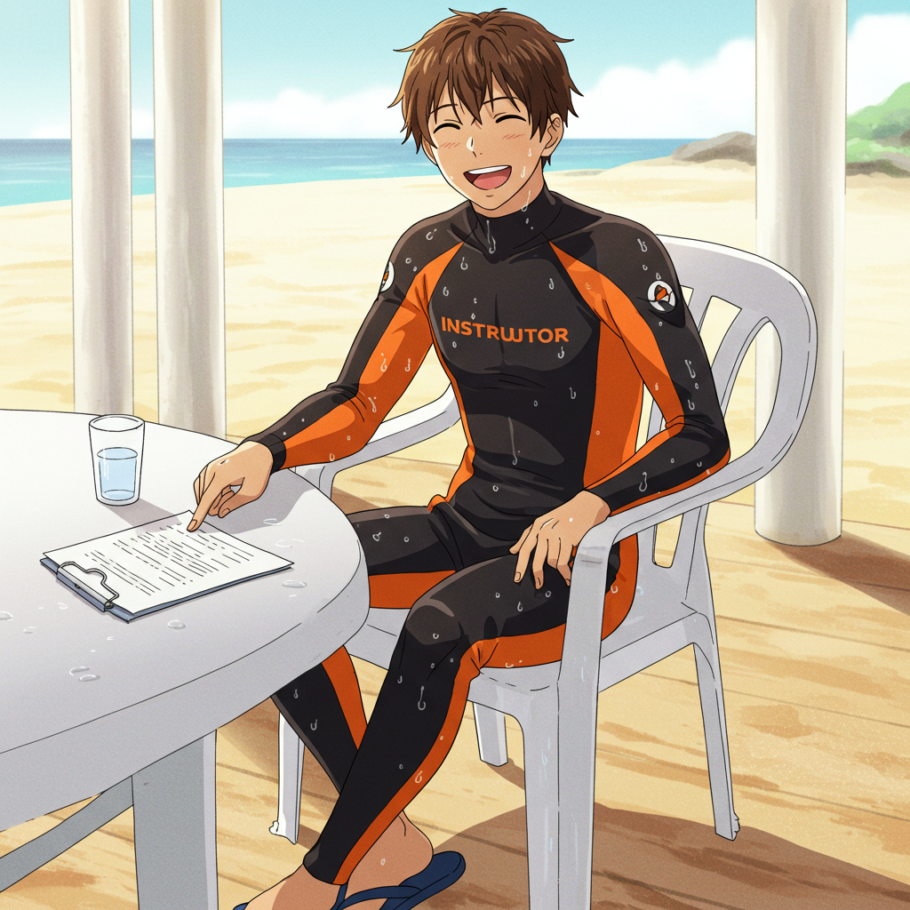
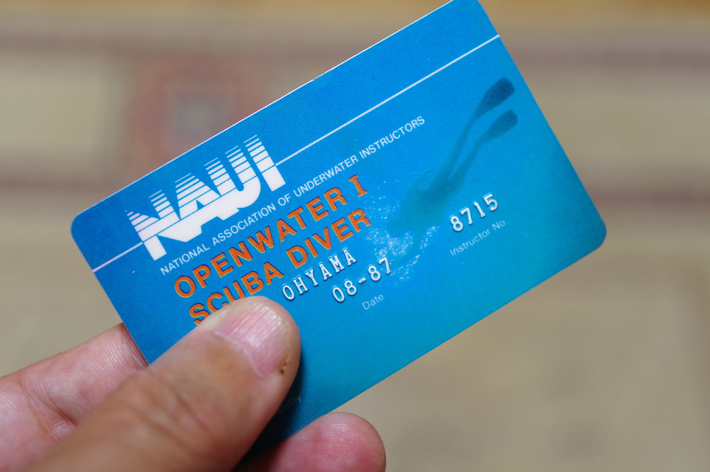
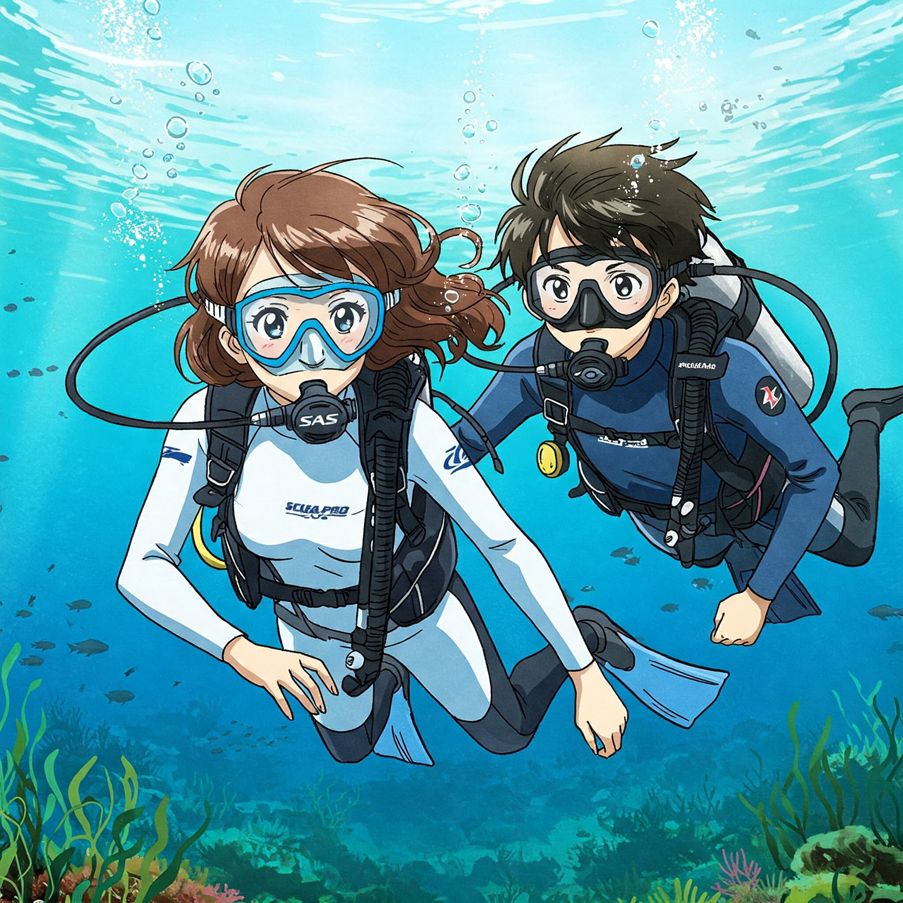

Whisk により生成
画像はイメージです。本人はこんな爽やかな好青年ではありませんでした(笑)
Whisk's Prompt:
The digital illustration, drawn with a cel-shaded anime and manga-style aesthetic, depicts a young male instructor with short brown hair and tanned skin. He has narrow eyes, simple facial features, and a smile. He wears a tight-fitting wetsuit in black and fluorescent orange, with water droplets indicating that he is wet. He sits cross-legged in a white plastic chair, which has been moved to the ground outside the cottage, near the beach. He wears blue thong sandals instead of black boots on his feet. His left arm is resting on a white plastic table, on which his hand is pointing at a document. On the table sits a glass of water and a white plastic clip holder with a document marked with a pencil. The color palette is soft and muted, with warm pastel tones throughout. The lighting is soft and diffused, avoiding harsh shadows. There are no walls visible in the background, only white columns, suggesting an outdoor or semi-outdoor setting near the beach behind the cottage. The view is taken at an angle from a slightly elevated position looking down on the instructor. He is wearing thong sandals, has his legs crossed, and is smiling with his mouth wide open.
まず最初に、お前はスクーバ・ダイビングが好きなのか？という質問をいただきました。
好きです。むっちゃ好きです。今でもむっちゃ好きです。
というのが質問への答えになります。若い頃に現役のアシスタント・インストラクターとして、都市型ショップや現地リゾートで働いていました。非常勤のときもあり、常勤のときもありました。
そもそもダイビングをやりたいなぁ、と漠然に思い始めたのは、昭和の頃にテレビで見ていたわんぱくフリッパーにまで遡ります。小学校低学年だったか、もしかすると幼稚園児だった頃かもしれません。
ブラウン管の中で外国のお兄さんたちが、さまざまな冒険を繰り広げているのをわくわくしながら、食い入るように見ていたことを思い出せます。
なので、よく聞く、ジャック・イブ・クストーの沈黙の世界で興味を持つようになったという人たちとは、興味を持つに至った道筋が少し違ったりしています。
そんなこともあり、Marine Diving 誌と Diving World 誌といった雑誌が毎月出版されていることを知る思春期頃になると、買い求めて毎月食い入るように読む、ということが日課になるようになります。
その後 Diver 誌がリリースされるようにもなり、やがて成人して IT 業界で働き始めるようになります。
その頃になると、世の中のさまざまなローン制度も整い始めており、実際に自分がスクーバ・ダイビングを始めることが現実味を帯びてきます。

手元に残している NAUI オープンウォーター I の C カードの日付が 1987 年の 8 月と刻印されています。1987 年は昭和 62 年なので、ギリ昭和のカードです(笑) なつかしい。
日付から想像できると思いますが、今では還暦を過ぎた、じいさまです (笑)
当時 NAUI のオープンウォーターは I と II があって、その次がアドバンスドになっていました。オープンウォーター I が現在の NAUI オープンウォーターに相当します。
そのうち NAUI に (NAUI だけではないのですが) 大変革の波がやってきて、オープンウォーター I が他の指導団体との統一基準に合わせたオープンウォーターとなりオープンウォーター II が廃止されます。
NAUI ではそれだけでなくオープンウォーターの前にパスポートダイバーというプログラムが追加されます。パスポートはインストラクターの管理下のみでの、スクーバダイビングを楽しむことが可能となるプログラムです。PADI のスクーバ・ダイバー・コースと同じものです。
経緯はよくわかっていないのですが (議決権のある現役インストラクターでないと重要な決定が行われる総会に参加できないので)、もともと体験ダイビングであっても、安全に楽しむための知識と練習が必要とされていて、実際に簡易的な講習のようなことは普通に行われていました。NAUI ではそれを、もう少しダイビングについて知ってもらえるようにプログラム化して、C カードも発行するようになった、ということになります。
パスポートダイバープログラムが創設されたときには、当たり前ですが オープンウォーター I をすでに持っていたので、私自身はというとパスポート・ダイバーのカードは持っていません。もちろん名前が変更されたオープンウォーターのカードも持っていません。ですがコレクター・アイテム的に申請していてもよかったかも、と今ではちょっと思っています (笑) カードの発行申請だけで当時の金額でそれぞれ 6000 円程度かかってしまいますけど。
最初にお世話になったショップさんなのですが、なんだかアドバンスド・スキューバ・ダイバーコースを受講したいと相談しても、オープンウォーター I 以外のコースが開催される気配が、まったくありません。理由は口にされませんが、いつもその話になるとのらりくらりと話を逸らされてしまいます。
もともとそのショップさんは作業ダイビングに力を入れていて、よく、去年からレジャーダイビングにも力を入れ始めんたんですよ、とおっしゃっていたいので、まだ会社経営の軸を作業に置いていらっしゃったのだろうなと、その口ぶりから想像していました。
どの指導団体でも、コースでやらなかったことは、コース基準としてはできない、許さない、ということになっているのですが、たとえば当時はオープンウォーター I コースでボートダイビングをやっていなくても、オープンウォーター I を取ったばかりの人を、ファンダイブでボートに乗せてしまうような、おおらかな時代でした。
初めてのボートダイビングのことを思い出してみると、たしかにとインストラクターとスタッフに引率されていたものの、ブリーフィングすらなかったと記憶しています。今から考えると絶対に良いことではないのですけどね。
ダイビングを学ぼうとする人が増え始めて、各団体や全国のショップ、サービスでコースの設定や、その内容をどうしていくのか、模索が始まっていた時代だったのかも知れません。そのあたりの話はまだ自身は単なる一般 オープンウォーター I ダイバーだったので、よくは、わかっていません。
なお各指導団体のコース基準では オープンウォーターコースは、コースが開催されたのと同じような環境、海況の場合でのみ、バディ・ダイビングができる、ということになっています。これは指導団体間で議論して調整して作り上げた統一基準で、この点はおそらく今でも変わっていないと思います。

バディ・ダイビングと書きましたが、正直なところ、コース基準のとおりに オープンウォーター の講習を終えたオープンのダイバーの方が、どんどんとオープン同士でバディ・ダイビングをするケースが増えていくことに、多くのリーダーシップ・ダイバーは少し不安を感じていました。
現在なら、お客さんのいない場に限定されますが、多くのリーダーシップ・ダイバーが、はっきりと無理、危ないと口にすると思います。
そのような発言は潜水指導団体のコース基準にマッチしませんし、お客さんをがっかりさせることになるので、職場では絶対に言いませんけど。
でも、今言ってしまったので、引退している身とはいえ、業界全体から集中砲火をあびてしまうかもしれません (笑)。
そもそも講習を終えたダイバーさんが、コースの受講中で体験したのと同じ条件だけで潜れるはずがないのですよ。
そうしたくても、それを海が許さない。コース基準を厳密に守ろうとすると、講習を終えたダイバーさんは、年間にいったいどれだけ、海に潜ることができるのでしょうか。
毎回海の環境は違うし、海況も違います。しかも日本の海で穏やかな海況というのは、めったにありません。せっかく C カードを取ったのに潜れないじゃないですか。
そんな中でお客さんが、コース基準から外れず (もちろんわたしたちもコース基準から外れずに)、普通にダイビングを楽しめて、経験も重ねることができて、いろんな環境や海況を体験できて、しかも安全に潜ることができて、ダイバーとして成長するためのサポートも受けることができて、それでなるべく費用も安くと、いろんなことを勘案して自然発生的に生まれたのが、今では普通になっていて、過去に一時は護送船団方式と揶揄されたり、自立を阻害すると世界から白い目で見られることも多かった、日本固有のフォーメーション・システムであったり、お客さんがダイバーとして育ってもらうために、ショップの常連さんになってもらうための様々な試みをしているわけです。
やはり多くのショップ、インストラクター、ダイブマスター、アシスタント・インストラクターは、講習だけでは限界がある、と思っていたし、今でも思っているわけです。
オープンウォーターコースを終えたばかりの認定ダイバーが、同様の環境、海況でも安全とは、本音のところでは思っていなくて、この人たちはどこかで事故るかもしれない、と思っていたりします。
もちろん認定ダイバーが事故を起こさないようになるための講習をしていますけれども、講習というのは必要条件は満たしているかも知れませんが、十分条件を満たしていると信じ切ることはやはり難しく、しかも認定ダイバーの事故は、やはり起きるときは起きます。
海外の事情は知りませんが、何かあったら事故を起こしたその人の責任であって、必要なことは教えているのだからショップやリーダーシップに責任はない、などと考えるショップ、インストラクター、ダイブマスター、アシスタント・インストラクターは指導団体を問わず日本国内にはいません。わたしたちは当然日本人なので、事故やトラブルは完全に 0 にしたいのです。わたしたち日本人は、そういうものでしょう？
コース基準の建前を口にするのは、ITC のコースディレクターが ITC 中にだけ建前として口にするくらいです。彼らも一般の方のコースやファンを開催しているときは、やっぱりコース基準よりもっと手厚くお客さんをサポートして、さらにいろいろ工夫しているわけです。事故を起こすダイバーになってもらっては困りますから当然のことです。
たとえばダイバーが普通に使うバディ・システムという安全管理上、最も重要な考え方があります。ですがバディ・システムに限らず、バディとはそもそもなんなのか？ということが、実はコース基準などでも明確でなかったりします。
バディはあなたの潜水中の相棒です、バディ・システムを守って緊急時は助け合いましょう、オクトパス・ブリージングがいつでもできるようにして緊急時はバディと浮上しましょう、バディは楽しみを分かち合う友です、などとマニュアルにも書かれていますし、我々も口にしています。
その通りなのですが、これだけでオープンウォーターダイバーがバディ・システムとはなにかを理解できるでしょうか？その必要性を理解できるでしょうか？無理ではないですか？
実際にバディ・システムが有効に機能するには、もう少しバディという存在と、バディ・システムについて深掘りしてわかってもらう必要があります。
バディ・システムは安全上最も大切な考え方ですが、具体的にそれが何を示しているのかをオープンウォーターコースだけで的確にお伝えするのが、なかなかに難しいものなのです。やはりステップバイステップで理解を深めていただく必要があります。また個々のダイバーの経験によっても、何をどう伝えるのか、伝えるべきなのかが変わってきます。
このようにバディ・システムは、機械的に教科書的にお伝えすることがとても難しいのですね。なのでステップアップコースやツアーなどで、個々のダイバーのレベルに合わせながら、ダイバー個人のパーソナルな理解をすすめていくような、まるでカウンセリングのような歩みになります。
伝えるべきことがあまりにたくさんあるにもかかわらず、やはり講習は短すぎますし、それらをすべて講習に詰め込もうとすると、何年経っても講習が終わらない、という馬鹿げたことになってしまいます。
なので様々なショップは、お客さんが常連さんになるように努め、楽しい経験を重ねながら、ダイバーとして成長してもらえるような、そんな環境づくりに取り組んでいるわけです。
ちょっと長くなってきました。話を戻すためにも、バディ・システムや業界裏話的な内容については、機会があれば日を改めて書こうと思います。
話を私自身のことに戻します。
疲れた人は、ちょっと読むのを止めてお茶でも飲んで、魚類図鑑や写真集を眺めるなどして、休憩してください。一度ネットにアップして、帰宅してからまた始めます。